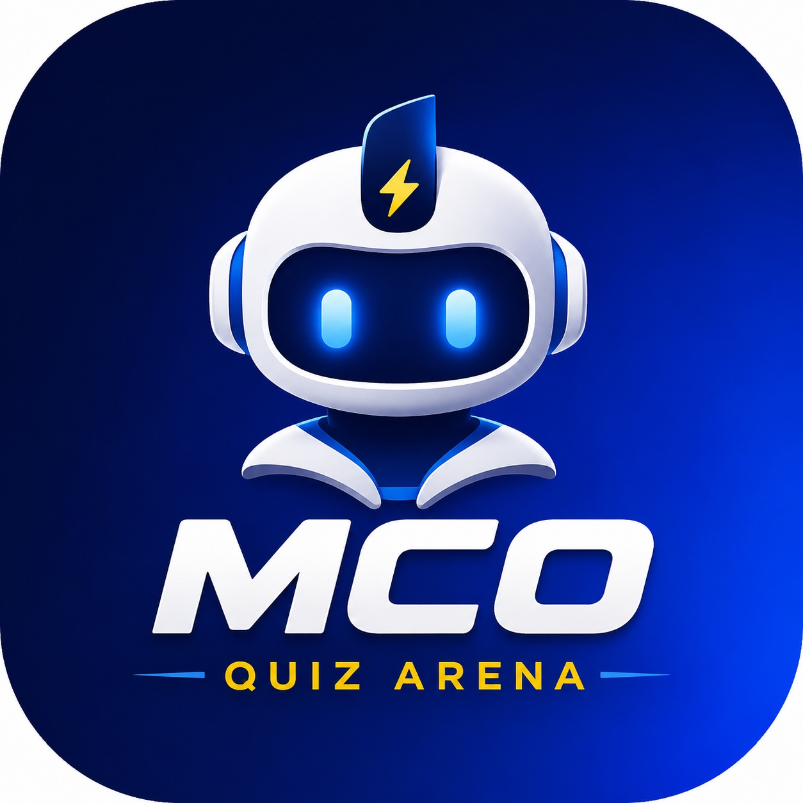

MCO Quiz Arena
NCR SOLUTIONS BTS MCO
⚡ QUIZ INTERACTIF • BTS MCO
Apprendre. Comprendre. Performer. Réussir.
Une plateforme de quiz pensée pour l’ADOC et la Gestion Opérationnelle : parties en direct, réponses sur smartphone, corrections pédagogiques, classement live et révision par chapitre et leçon.

🎮 Mode classePartie projetée, QR code, chrono, correction et classement.
🧠 Révision156 leçons structurées sur les 2 années ADOC et GO.
📚 Banque complète1 620 questions actuellement intégrées.
📱 PWAInstallable sur téléphone, tablette et ordinateur depuis GitHub Pages.